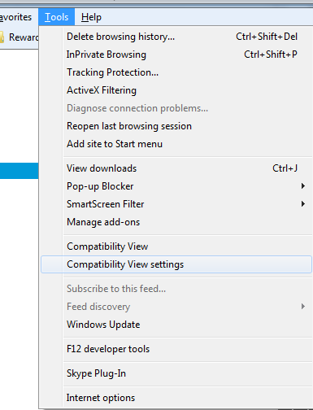
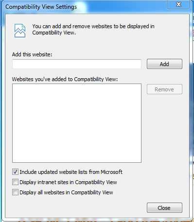
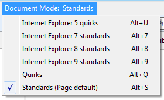

GitHub is designed to support the latest web browsers.
We recommend using Google Chrome - it's fast and updates itself automatically. We also support the current versions of Safari, Firefox, and Internet Explorer 9+.
Firefox ESR
We do our best to support Firefox's latest Extended Support Release. While a majority of the site should work, some features may be disabled and require the latest version of Firefox.
Internet Explorer Compatibility View
We only support IE running in "Standards Mode." If you see an error message saying your browser is outdated, it may be running in "Compatibility View." Turning off this compatibility mode will remove the outdated browser error.
IE 9
- Visit github.com
- Click the "Compatibility View" button in the address bar
- Refresh the page
IE 9 for Enterprise
If you are accessing GitHub Enterprise from an intranet domain, it may be forced to use compatibility mode. You can turn this off in the Compatibility View settings:
- Go to
Tools→Compatibility View Settings - Uncheck "Display intranet sites in Compatibility View" 
IE 10
IE10 should default to "Standards Mode." If you're getting the outdated browser error message, the settings have likely been changed to force "Compatibility View" to be used.
- Open F12 developer tools by pressing the F12 key
- Set Browser Mode to "Internet Explorer 10"
- Set Document Mode to "Standards" 
Beta and developer builds
You may occasionally encounter unexpected bugs in beta and developer builds of our supported browsers. If you encounter a bug on GitHub.com in one of these unreleased builds, please verify that it also exists in the stable version of the same browser. If the bug appears to only exist in the unstable version, you might consider reporting it to the browser developer.